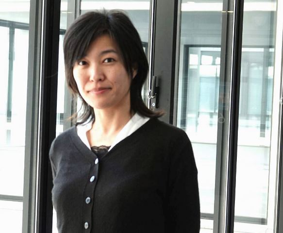
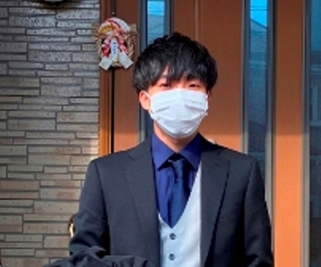
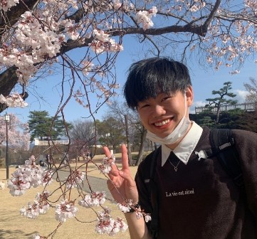
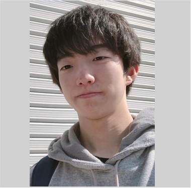
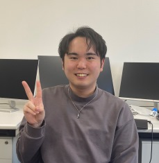
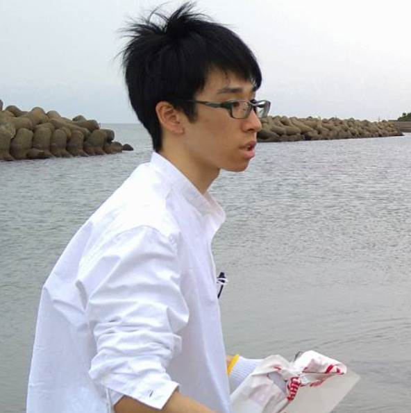
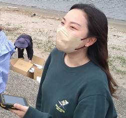
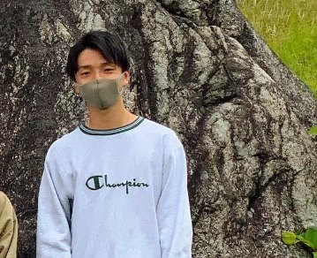

教員
 |
久加 朋子 (Tomoko Kyuka) |
研究補助員
| 海老澤 |
研究室学生（2024年4月更新）
大学院生（graduate-students)
 |
M2 水野 智仁 研究テーマ：庄川における長期的な河道内樹林化プロセスと新規侵入した樹木が流路変動に及ぼす影響 |
 |
M2 山本 悠賀 研究テーマ：常願寺川における粒度分布の広さを考慮した河床・流路変動特性の検討 |
4年生（undergraduate-students)
 |
B4 田代 陸人 研究テーマ：R6年度能登半島地震発生後における富山沿岸域の道路状況と河川津波を考慮した避難経路の考察 |
|
B4 東野 愛絵 研究テーマ：常願寺川・庄川における経年的な河道変化と既往最大出水時の河岸・堤防侵食リスクの検討 |
|
|
B4 竹山 健太 研究テーマ：小矢部川における浮遊ゴミの年間輸送量と輸送特性の把握手法の検討 |
-----------------------------------------
過年度 卒業学生
2023度卒業
|
B4 伊藤 なぎさ 研究テーマ：富山県一級河川庄川と常願寺川における既往最大出水下での流れ・河床変動特性の検討 卒論優秀発表賞 （三井共同建設コンサルタント株式会社様 就職） |
|
 |
B4 磯谷 健 研究テーマ：富山県一級河川における浮遊ごみ輸送特性－神通川，庄川，小矢部川の比較－ 卒論優秀発表賞 （中日本ハイウェイ・エンジニアリング名古屋株式会社様 就職） |
 |
B4 船崎 健人 研究テーマ：河口域におけるマイクロプラスチックゴミの輸送特性の把握 卒論優秀発表賞 （北陸コンサルタント株式会社様 就職） |
 |
B4 丹羽 遥香 研究テーマ：神通川におけるサクラマス越夏場所である淵寿命と河川連続性の検討 同じく発表賞とれるほどの良い研究でした（ニアピン賞） （株式会社フジヤマ様 就職） |
2022年度卒業
|
B4 水野 智仁 研究テーマ：庄川における近年被災状況と河床・流路変動特性の検討 卒論優秀発表賞 （大学院進学） |
|
|
B4 山本 悠賀 研究テーマ：常願寺川における土砂供給量変化に伴う河床・流路変動特性の検討 卒論優秀発表賞 （大学院進学） |
|
 |
B4 冨満 亮太 研究テーマ：小矢部における河川浮遊ゴミの現況と輸送特性の検討 土木学会中部支部優秀発表賞 （株式会社NIPPO様 就職） |
|
B4 藤本 紫衣奈 研究テーマ：神通川水系におけるサクラマス越夏場所（淵）の分析と解析 同じく発表賞とれるほどの良い研究でした （砺波工業株式会社様 就職） |
地域防災学研究室＠北海道大学大学院工学研究院